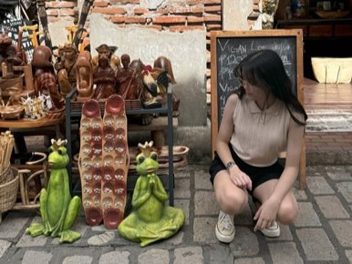

About Isabela
As a daily commuter, I’ve experienced the struggles of unreliable and overcrowded transit. Public transportation has long been a challenge in our country, affecting millions. I advocate for change—not just for myself, but for everyone who deserves a safer, more reliable, and commuter-friendly system.